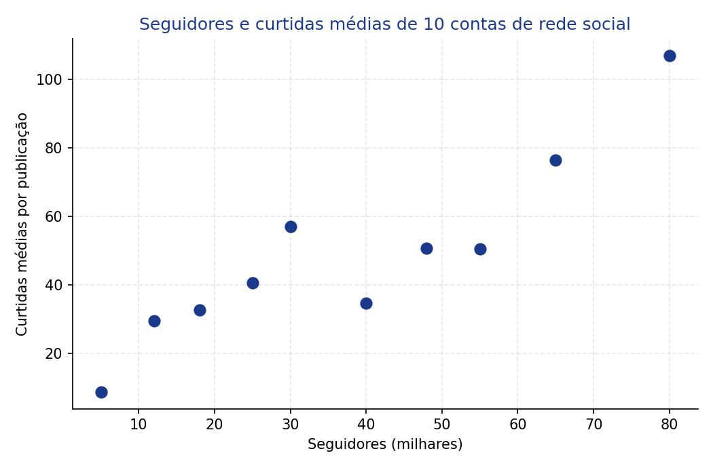
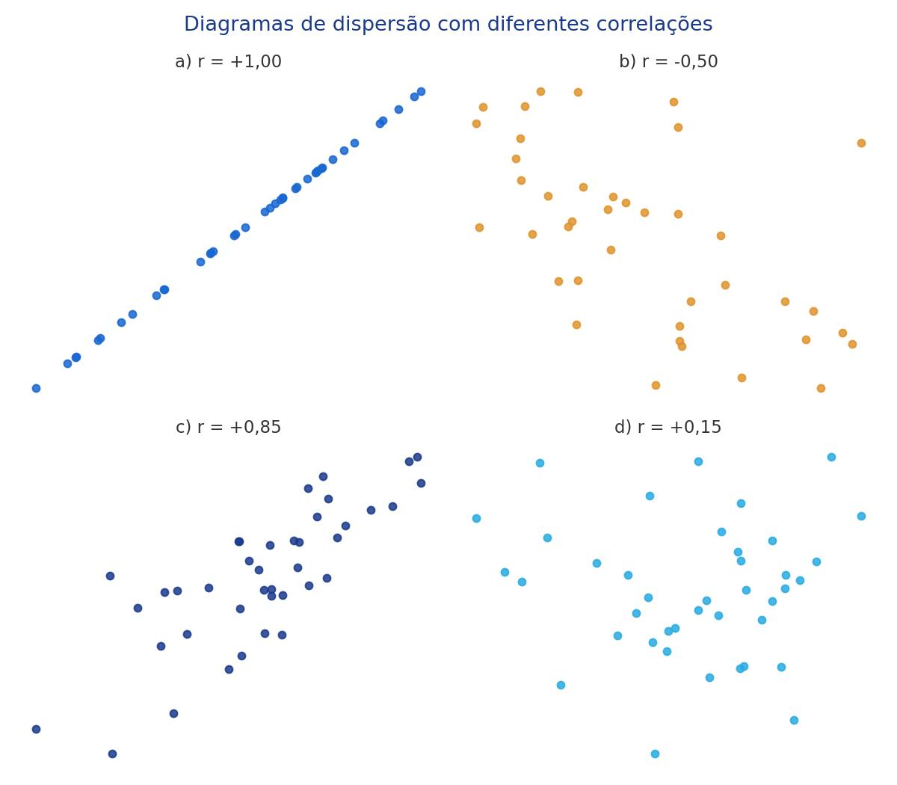

Correlação é o mesmo que causalidade?
Até agora estudamos uma variável de cada vez: um histograma, uma média, uma distribuição. Nesta aula olhamos para duas variáveis ao mesmo tempo e perguntamos: elas caminham juntas? Vamos aprender a enxergar essa relação em um gráfico, medi-la com um número (a correlação) e, principalmente, entender por que "estar relacionado" não é o mesmo que "ser a causa".
Objetivos de Aprendizagem
Ao término desta aula, vocês serão capazes de:
- Interpretar um diagrama de dispersão, identificando relações positivas, negativas ou inexistentes entre duas variáveis;
- Reconhecer quando uma relação entre variáveis é aproximadamente linear;
- Calcular o coeficiente de correlação (r) para um conjunto pequeno de dados;
- Interpretar a força e a direção de uma correlação usando a escala de -1 a +1;
- Diferenciar correlação de causalidade, reconhecendo variáveis de confusão.
Seções de Estudo
- SEÇÃO 1 Diagrama de dispersão: visualizando a relação entre duas variáveis
- SEÇÃO 2 Correlação: medindo a força e a direção da relação
- SEÇÃO 3 Propriedades da correlação e o cuidado com causa e efeito
Diagrama de dispersão: visualizando a relação entre duas variáveis
Quando cada observação traz duas informações numéricas ao mesmo tempo (um par x e y), chamamos isso de dado bivariado. O diagrama de dispersão (ou gráfico de dispersão) é a forma mais simples de visualizar esse tipo de dado: cada par (x, y) vira um ponto no gráfico, posicionado pela coordenada x (eixo horizontal) e pela coordenada y (eixo vertical).
Ao observar os pontos da esquerda para a direita, três padrões são possíveis: uma tendência de subida (relação positiva: quando x aumenta, y também aumenta), uma tendência de descida (relação negativa: quando x aumenta, y diminui), ou nenhum padrão visível (não há relação entre as variáveis).

| O que você vê no gráfico | O que significa |
|---|---|
| Pontos subindo da esquerda para a direita | Relação positiva |
| Pontos descendo da esquerda para a direita | Relação negativa |
| Pontos espalhados, sem padrão | Nenhuma relação (linear) |
Correlação: medindo a força e a direção da relação
O diagrama de dispersão mostra a relação, mas não diz o quão forte ela é. Para isso existe o coeficiente de correlação, representado pela letra r: um único número, entre -1 e +1, que resume a força e a direção de uma relação linear entre duas variáveis numéricas.
Quanto mais perto de +1 ou -1, mais forte é a relação linear (os pontos ficam mais próximos de uma reta); quanto mais perto de 0, mais fraca ela é (os pontos ficam mais espalhados). O sinal indica a direção: positivo para relação de subida, negativo para relação de descida.
| Valor aproximado de r | Interpretação |
|---|---|
| -1 | relação negativa perfeita |
| -0,70 | relação negativa forte |
| -0,50 | relação negativa moderada |
| -0,30 | relação negativa fraca |
| 0 | nenhuma relação linear |
| +0,30 | relação positiva fraca |
| +0,50 | relação positiva moderada |
| +0,70 | relação positiva forte |
| +1 | relação positiva perfeita |

Propriedades da correlação e o cuidado com causa e efeito
A correlação tem algumas propriedades úteis de conhecer: ela é sempre um número entre -1 e +1; não depende da unidade de medida (trocar metros por centímetros não muda o valor de r); e não depende de qual variável é x e qual é y (trocar as duas de lugar não muda o valor de r).
A propriedade mais importante, porém, é uma limitação: correlação não é causalidade. Duas variáveis podem estar fortemente correlacionadas sem que uma cause a outra. Muitas vezes existe uma terceira variável, chamada variável de confusão, que influencia as duas ao mesmo tempo.
| Propriedade | O que significa |
|---|---|
| -1 ≤ r ≤ 1 | A correlação nunca sai desse intervalo |
| Não tem unidade | Trocar a unidade de x ou y não muda r |
| X e Y podem trocar de lugar | A correlação entre x e y é igual à entre y e x |
| Correlação ≠ causalidade | Uma relação forte não prova que uma variável causa a outra |
Exemplo Matemático Resolvido
Um usuário registrou, por 3 dias, quantos stories publicou (x) e quantas respostas recebeu (y): dia 1 (2, 3), dia 2 (4, 5), dia 3 (6, 4). Calcule a correlação entre essas duas variáveis.
- Dados: x = 2, 4, 6; y = 3, 5, 4; n = 3; x̄ = 4; ȳ = 4
- Fórmula: r = Σ(x − x̄)(y − ȳ)(n − 1) · sx · sy
- Substituição: desvios de x: -2, 0, 2; desvios de y: -1, 1, 0; produtos: (-2)(-1) = 2, (0)(1) = 0, (2)(0) = 0; soma dos produtos = 2; sx = 2; sy = 1
- Cálculo: r = 22 · 2 · 1 = 0,50
- Interpretação: r = 0,50 indica uma correlação positiva moderada: dias com mais stories tendem a ter um pouco mais de respostas, mas a relação não é muito forte.
Exemplo em Python
Desde a versão 3.10, o módulo statistics tem a função
correlation, que calcula o coeficiente de correlação
de Pearson diretamente. O programa abaixo repete o cálculo do
exemplo resolvido e classifica a força da relação.
import statistics
stories = [2, 4, 6]
respostas = [3, 5, 4]
r = statistics.correlation(stories, respostas)
if abs(r) >= 0.7:
forca = "forte"
elif abs(r) >= 0.5:
forca = "moderada"
elif abs(r) >= 0.3:
forca = "fraca"
else:
forca = "muito fraca ou inexistente"
direcao = "positiva" if r > 0 else "negativa"
print(f"Correlação: {r:.2f}")
print(f"Relação {direcao} e {forca}")
Entrada: listas com o número de stories e de respostas em 3 dias.
Processamento: statistics.correlation
calcula r; uma cadeia de if/elif/else classifica a
força pela distância até zero, e o sinal de r define a
direção.
Saída: "Correlação: 0.50" e "Relação positiva e moderada".
Interpretação: o resultado confirma o cálculo manual: uma relação positiva, mas apenas moderada, entre stories publicados e respostas recebidas.
Exercícios
statistics.correlation, que calcule e imprima
o coeficiente de correlação entre essas duas variáveis.
Gabarito Comentado
Exercício 1
import statistics
horas = [2, 3, 4, 5, 6]
notificacoes = [10, 12, 15, 14, 20]
r = statistics.correlation(horas, notificacoes)
print(f"Correlação: {r:.4f}")
Saída: "Correlação: 0.9231".
Comentário: r ≈ 0,92 é uma correlação positiva forte, bem próxima de +1: quanto mais horas de uso, mais notificações abertas, de forma bastante consistente.
Exercício 2
import statistics
velocidade = [10, 20, 30, 50, 80]
tempo_carregamento = [25, 18, 14, 9, 5]
r_xy = statistics.correlation(velocidade, tempo_carregamento)
r_yx = statistics.correlation(tempo_carregamento, velocidade)
direcao = "positiva" if r_xy > 0 else "negativa"
if abs(r_xy) >= 0.7:
forca = "forte"
elif abs(r_xy) >= 0.5:
forca = "moderada"
else:
forca = "fraca"
print(f"r(x,y): {r_xy:.4f} | r(y,x): {r_yx:.4f}")
print(f"Relação {direcao} e {forca}")
Saída: "r(x,y): -0.9459 | r(y,x): -0.9459" e "Relação negativa e forte".
Comentário: trocar a ordem das variáveis não muda o valor de r, confirmando a propriedade da Seção 3. O sinal negativo mostra que velocidades maiores de Wi-Fi estão associadas a tempos de carregamento menores.
Retomando a Conversa Inicial
Seção 1, Diagrama de dispersão: organiza dados bivariados em pontos (x, y), revelando tendências de subida, de descida ou nenhum padrão.
Seção 2, Correlação: resume a força e a direção de uma relação linear em um único número, r, entre -1 e +1.
Seção 3, Propriedades: a correlação não tem unidade e é simétrica entre x e y, mas nunca prova causalidade; desconfie de variáveis de confusão.
Revisão Rápida
| Conceito | Fórmula | Erro comum | Dica de prova | Aplicação em Tecnologia |
|---|---|---|---|---|
| Diagrama de dispersão | par (x, y) | Confundir tendência com relação de causa | Subida = positiva; descida = negativa | Seguidores x curtidas médias |
| Correlação (r) | Σ(x − x̄)(y − ȳ)(n − 1) · sx · sy | Calcular r sem checar se a relação é linear | r vai de -1 a +1 | Stories publicados x respostas |
| Interpretação de r | -1 a +1 (escala de força) | Achar que r = -1 é "ruim" | Perto de -1 ou +1 = relação forte | Uso do app x notificações |
| Correlação x causalidade | N/A | Achar que correlação prova causa | Pense em variáveis de confusão | Wi-Fi mais rápido x menos tempo de espera |
Sugestões de Leituras e Sites
LEITURAS
RUMSEY, Deborah J. Statistics For Dummies. 2. ed. Hoboken, NJ: Wiley Publishing, 2011. (livro-base desta aula, recomendado para aprofundamento em correlação.)
SITES
Khan Academy, Estatística e Probabilidade: https://pt.khanacademy.org/math/statistics-probability (aulas gratuitas em português sobre diagramas de dispersão e correlação.)
Glossário
| Termo | Definição |
|---|---|
| Dado bivariado | Observação composta por duas variáveis numéricas, formando um par (x, y). |
| Diagrama de dispersão | Gráfico que representa pares (x, y) como pontos, revelando padrões entre duas variáveis. |
| Correlação (r) | Número entre -1 e +1 que mede a força e a direção de uma relação linear entre duas variáveis. |
| Relação positiva/negativa | Quando x aumenta, y também aumenta (positiva) ou diminui (negativa). |
| Variável de confusão | Terceira variável que influencia duas outras ao mesmo tempo, criando uma correlação sem causa direta entre elas. |
Referências Bibliográficas
MORETTIN, Pedro A. Estatística básica. 10. ed. Rio de Janeiro: Saraiva Uni, 2023. E-book. p.i. ISBN 9788571441484. Disponível em: https://integrada.minhabiblioteca.com.br/reader/books/9788571441484/. Acesso em: 01 dez. 2025.
TRIOLA, Mario F. Introdução à Estatística. 14. ed. Rio de Janeiro: LTC, 2024. E-book. p.Capa. ISBN 9788521638780. Disponível em: https://integrada.minhabiblioteca.com.br/reader/books/9788521638780/. Acesso em: 01 dez. 2025.